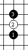
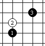
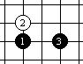
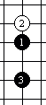

开局直指四星助记诗
#1 开局直指四星助记诗 作者：星月族 发表时间：2009-12-16 17:38:53
"有志青年"转贴的这篇《五子棋开局速记有办法》,很有新意，已经脱离了简单助记的范畴，而使五子棋开局名称更加具有了文化的品味，使人不仅感受弈棋之乐，更品读到中华文化之博大精美。
受此启发，写下《开局直指四星助记诗》一首，一来自己在学习时助记，二来也是为连珠文化建设增砖添瓦。
鉴于才学有限，连珠资历尚浅，请各位大家不要见笑。
开局直指四星助记诗
寒剑直指洞九天
疏苗斜对三分田
金门平开成横日
瑞气南来一水间
说明：
这是一首藏头诗，按照原文中“寒疏金瑞”四星的顺序，每句首字即为一星的简称，第三、四字是第三手棋与第一手棋的相对位置，各句都是根据开局的棋型或原文讲解联想而来，可能不免有牵强之处，敬请各位指正。
上次因时间仓促，有些词句未及推敲斟酌。后来从五子棋的文化精髓入手，以倡导和谐相处、企盼国泰民安为主线，对全诗在立意上进行了调整，使四句诗的内部关系更加紧密，浑然一体，同时也提升了全诗对五子棋文化内涵的诠释。
国泰民安
（直指开局四星助记诗）
寒剑直指洞九天，
疏苗斜立一分田。
金瓯太平永宁日，
瑞气南来碧水间。
诗面释义：
寒剑直指洞九天：典出“颛顼共工之战”，这里泛指各种不义之战。
疏苗斜立一分田：不义之战使得耕地荒芜、人口锐减，甚至“白骨露于野，千里无鸡鸣”。
金瓯太平永宁日：金瓯：比喻疆土之完整，亦用以指国土。
瑞气南来碧水间：后两句说明只有国家统一、天下太平，祥瑞才能降临碧水蓝天的人间，使人们过上美好幸福的生活，体现了对和平、安定的企盼。
助记释义：
寒剑直指洞九天：寒星局黑1和黑3象一把利剑，向上直指洞穿白2所象征的天空，同时点出这是直指开局的一种，并说明了下面三种开局的性质。
疏苗斜立一分田：疏星局受原文“黑1与黑3在田字格的对角线，想一想，田地里长着稀疏的禾苗，远远相离”的启发，既点明了黑1和黑3的相对位置，也说明了两者组成了一个“田”字。
金瓯太平永宁日：金星局也是受原文“黑子1与3与白子2 成一个日字”的启发，说明黑3与黑1平行，并与白2共同组成了一个“日”字。
瑞气南来碧水间：瑞星局是按照上北下南的方位，点明黑3是在黑1之下，并间隔如同河水的一线，同时也有“祥瑞天降”的美好寓意。
#2 Re:开局直指四星助记诗 作者：星月族 发表时间：2009-12-18 10:43:43
上次因时间仓促，有些词句未及推敲斟酌。后来从五子棋的文化精髓入手，以倡导和谐相处、企盼国泰民安为主线，对全诗在立意上进行了调整，使四句诗的内部关系更加紧密，浑然一体，同时也提升了全诗对五子棋文化内涵的诠释。
国泰民安
（直指开局四星助记诗）
寒剑直指洞九天，
疏苗斜立一分田。
金瓯太平永宁日，
瑞气南来碧水间。
诗面释义：
寒剑直指洞九天：典出“颛顼共工之战”，这里泛指各种不义之战。
疏苗斜立一分田：不义之战使得耕地荒芜、人口锐减，甚至“白骨露于野，千里无鸡鸣”。
金瓯太平永宁日：金瓯：比喻疆土之完整，亦用以指国土。
瑞气南来碧水间：后两句说明只有国家统一、天下太平，祥瑞才能降临碧水蓝天的人间，使人们过上美好幸福的生活，体现了对和平、安定的企盼。
助记释义：
寒剑直指洞九天：寒星局黑1和黑3象一把利剑，向上直指洞穿白2所象征的天空，同时点出这是直指开局的一种，并说明了下面三种开局的性质。
疏苗斜立一分田：疏星局受原文“黑1与黑3在田字格的对角线，想一想，田地里长着稀疏的禾苗，远远相离”的启发，既点明了黑1和黑3的相对位置，也说明了两者组成了一个“田”字。
金瓯太平永宁日：金星局也是受原文“黑子1与3与白子2 成一个日字”的启发，说明黑3与黑1平行，并与白2共同组成了一个“日”字。
瑞气南来碧水间：瑞星局是按照上北下南的方位，点明黑3是在黑1之下，并间隔如同河水的一线，同时也有“祥瑞天降”的美好寓意。
#3 Re:开局直指四星助记诗 作者：小帮帮 发表时间：2009-12-18 12:16:39
人家记四个开局不过是8个字，都是星，所以才4个字，你们整一首这么难懂的一首诗，还算助记，不是开玩笑吧。
这个只能算是你们对这4个开局做的一首打油诗。
#4 Re:Re:开局直指四星助记诗 作者：星月族 发表时间：2009-12-18 12:37:19
引用：
原文由 小帮帮 发表于 2009-12-18 12:16:39 :人家记四个开局不过是8个字，都是星，所以才4个字，你们整一首这么难懂的一首诗，还算助记，不是开玩笑吧。
这个只能算是你们对这4个开局做的一首打油诗。
八个字可以记住名称,四句诗可以记名还可以记棋型,对于我这样的初学者还是有帮助的,开头已经说了,这是为自己助记写的,高手达人自然不在此列.
#5 Re:开局直指四星助记诗 作者：星月族 发表时间：2009-12-24 17:25:40
直指开局四星八齐聚首